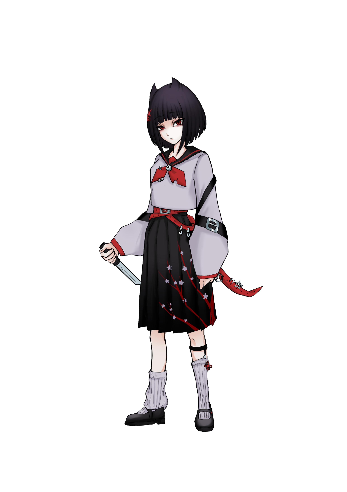
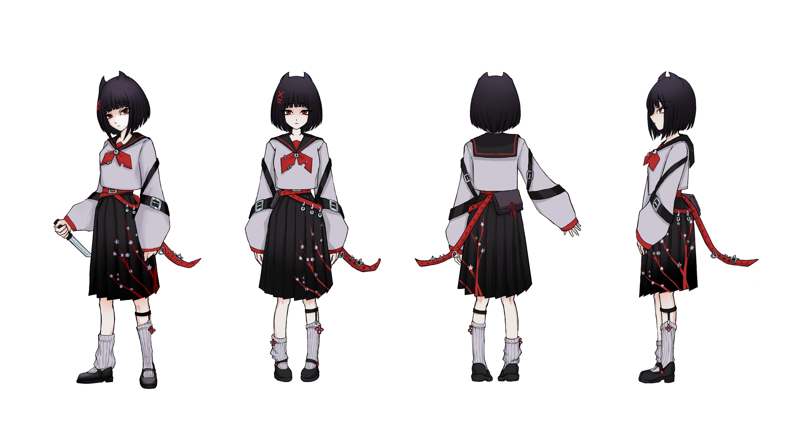
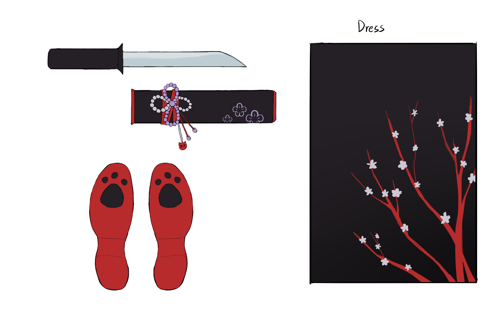
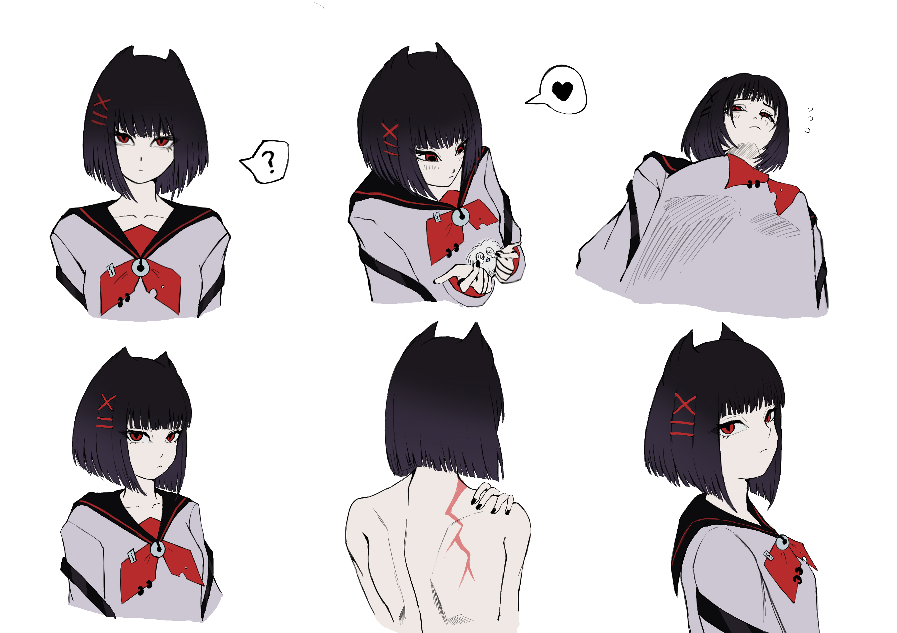
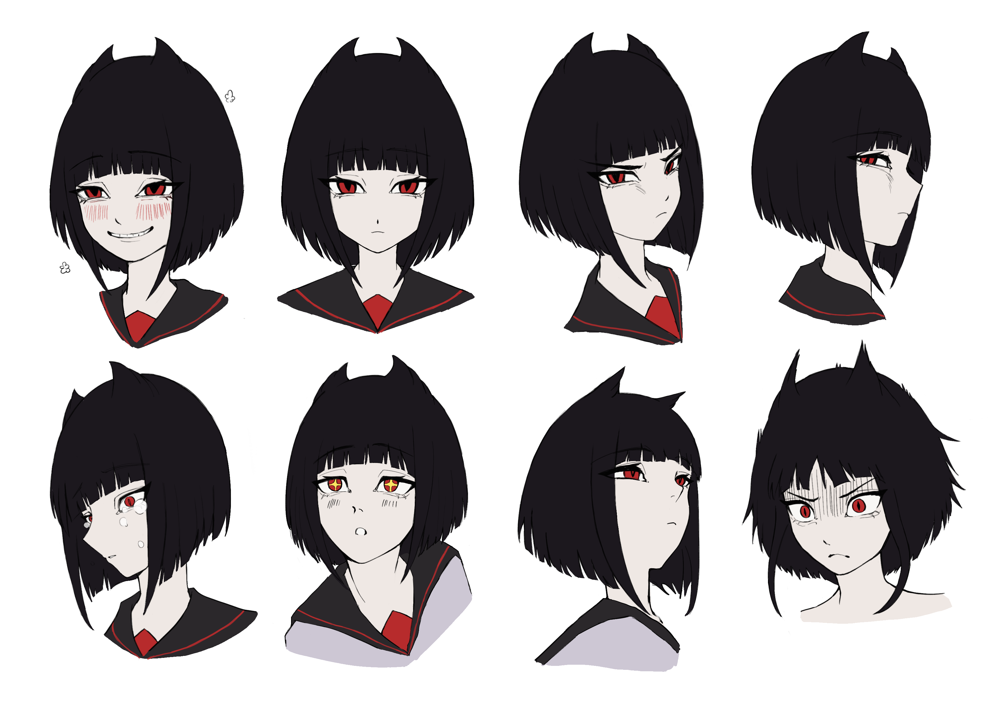
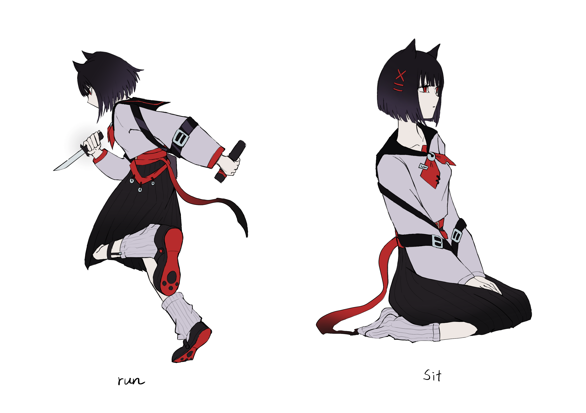
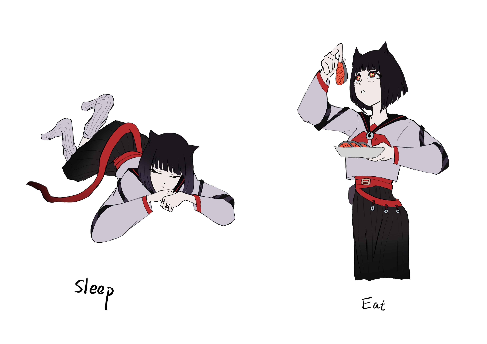

コハナ祭りの最中、黒狐は重傷を負い、予定より早く戻ってきた。意識を失う直前、彼は梅に、自分を傷つけた者を見つけて殺すよう命じた。 こうして梅の「梅花試練（ばいかしれん）」が始まった。
梅は犯人を突き止めた──赤狐であった。しかし、梅は「妖刀」の秘密を知っていたため、赤狐を殺さず負傷させるだけにとどめ、報告のため に戻った。梅は黒狐を訪ね、なぜ自分の両親を救わなかったのか問い詰めた。
黒狐は妖刀の起源と真の性質を告白した。争いの中で短刀は砕け散り、砕けた刃から「穢れ」があふれ出し、梅に反動として襲いかかる。力が 弱まり、闇に飲み込まれそうになったその時、黒狐が穢れに満ちた霧の中を踏み越え、代わりに穢れを引き受けた。
黒狐は倒れ、かろうじて生きていた。消えかけた息で、最後の願いを梅に託す。それは自身の伝言を届け、「黒狐」を解散することだった。静 かなその瞬間、梅の腕の中で黒狐は息を引き取った。
梅は「黒狐」を解散した。主を失った黒狐領は混乱と不確実の中に沈んだ。もはや梅は答えを求めるだけの少女ではない。自らの道を切り開 き、人生の旅を歩み続ける。
During the Kohana Matsuri, Black Fox came back early with serious injuries. Before he lost consciousness, he ordered Mei to find the person who hurt him and wanted to kill him. Mei began her Plum Blossom Trial.
Mei tracked down the culprit – the Red Fox. However, due to Mei knowing the secret of the demon dagger. She only wounded the Red Fox then returning to report. Mei decided to find Black Fox and confront him with why he never saves her own parents.
The Black Fox confesses to Mei the origin and true nature of the demon. During their struggle, the dagger shatters. From the broken dagger, the “Blight” surges forth, backlashing Mei. As Mei’s strength begin to fade, and darkness threatened to consume her, the Black Fox steppes through the corrupt mist and bore the “Blight” in her place.
The Black Fox collapses, barely clinging to life. With fading breath, he entrusts Mei with his final wish: to deliver his message and disband the Black Fox. In that quiet moment, cradles in Mei’s arms, the Black Fox drew his last breath.
Mei disbands the Black Fox. Without lord, the Black Fox Domain plunges into turmoil uncertainty. Mei is no longer the girl who sounds answers. She carves a path of her own and continues her life’s journey.